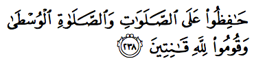

ফার্সি ভাষায় ‘নামাজ’, আরবিতে ‘সালাহ’ শব্দটির একটি অর্থ হলো ‘সংযোগ’। নামাজের মাধ্যমে আমরা আল্লাহর تعالى সাথে আমাদের সম্পর্ক স্থাপন করি, সবসময় তাঁকে মনে রাখি। আল্লাহ تعالى আমাদেরকে দিনে পাঁচ ওয়াক্ত নামাজ একারণেই দিয়েছেন, যেন আমরা কাজের চাপে পড়ে, হিন্দি সিরিয়াল বা খেলা দেখতে গিয়ে, বা রাতভর ভিডিও গেম খেলতে গিয়ে তাঁকে ভুলে না যাই। কারণ তাঁকে ভুলে যাওয়াটাই হচ্ছে আমাদের নষ্ট হয়ে যাওয়ার প্রথম ধাপ। যখনি আমরা একটু একটু করে আল্লাহকে تعالى ভুলে যাওয়া শুরু করি, তখনি আমরা আস্তে আস্তে অনুশোচনা অনুভব না করে খারাপ কাজ করতে শুরু করি। আর সেখান থেকেই শুরু হয় আমাদের পতন। দিনে পাঁচ ওয়াক্ত নামাজ আমাদেরকে এই একটু একটু করে নষ্ট হয়ে যাওয়া থেকে বাঁচিয়ে রাখে, আল্লাহর تعالى সাথে সংযোগ কিছুটা হলেও ধরে রাখে।
লক্ষ্য করার মতো ব্যাপার হলো, সূরা আল-বাক্বারাহ’তে তালাক নিয়ে কয়েকটি আয়াত এবং বিধবাদের নিয়ে কয়েকটি আয়াতের ঠিক মাঝখানে আল্লাহ تعالى নামাজের কথা বললেন—

নামাজগুলোর সাবধানে যত্ন নাও, আর বিশেষ করে মধ্যবর্তী নামাজের, আর আল্লাহর تعالى সামনে সম্পূর্ণ একাগ্রতার সাথে দাঁড়াও। [আল-বাক্বারাহ ২৩৮]
তালাক এবং মৃত্যু দুটোই মানুষের জন্য ভয়াবহ ঘটনা। অনেকেই এই পরিস্থিতিতে পড়ে সবার আগে আল্লাহকে تعالى দোষ দেন, “কেন আমার বেলায় এমন হলো? আমি কী করেছি? আমার তো কোন দোষ ছিলো না? আমি এত নামাজ পড়তাম, যাকাত দিতাম, রোজা রাখতাম, তাহলে আমার কপালে এমন মানুষ জুটলো কেন?” —আল্লাহ تعالى এই দুই কঠিন ঘটনার মাঝখানে নামাজের আয়াত দিয়ে আমাদেরকে শেখাচ্ছেন যে, জীবনে যতই কষ্ট আসুক, আমরা যেন নামাজ ছেড়ে না দেই। নামাজকে আমাদের শক্ত হাতে পাহারা দিতে হবে। জীবনের কঠিন ঘটনাগুলোতে আল্লাহর تعالى সাথে রাগ করে নামাজ ছেড়ে না দিয়ে, বরং দৃঢ়ভাবে নামাজকে আঁকড়ে ধরে রাখতে হবে। নামাজ হচ্ছে আল্লাহর تعالى সাথে আমাদের সংযোগ, আল্লাহর সাথে আমাদের একান্ত সম্পর্ক। বিপদ, দুর্যোগ, শারীরিক বা মানসিক কষ্টের সময় যদি আমরা আল্লাহর تعالى সাথেই সংযোগ কেটে দেই, তাহলে আমরা কার কাছে যাবো? আল্লাহ تعالى ছাড়া আর কে আছে, যে আমাদের কঠিন অবস্থা থেকে উদ্ধার করতে পারে?
এই আয়াতে আল্লাহ تعالى নামাজের ব্যাপারে حَافِظ হাফিজ হতে বলেছেন। হাফিজ শব্দের অর্থ সাবধানে যত্ন করা, পাহারা দেওয়া, প্রতিরক্ষা ব্যবস্থা নেওয়া। আমাদের নামাজের উপর সবসময় আক্রমণ চলছে। শয়তানের প্রথম কাজ হচ্ছে মানুষকে নামাজ থেকে দূরে সরিয়ে নেওয়া। নামাজের সময় ফোন আসে, বাচ্চা চিৎকার শুরু করে, শ্বশুর-শাশুড়ি ডাকাডাকি করে, টিভিতে টান টান উত্তেজনার মুহূর্ত চলতে থাকে, কম্পিউটারে কারো সাথে আড্ডা ভীষণ জমে যায়। আমরা এসব দিকে মনোযোগ দিতে গিয়ে নামাজের কথা ভুলে যাই, ওয়াক্ত পার হয়ে যায়। পড়বো, পড়বো করেও আর পড়া হয় না। আর যখন কোনো কারণে ভীষণ মনখারাপ হয়, বা বিপদে পড়ে ছোটাছুটি চলতে থাকে, তখন সবার আগে মানুষ নামাজের কথা ভুলে যায়। ভুলে না গেলেও, অনেকটা আল্লাহর تعالى সাথে রাগ করেই নামাজ পড়া ছেড়ে দেয়। যেন নামাজ না পড়লে আল্লাহ تعالى আমাদের অভিমান ভাঙ্গানোর জন্য জলদি আমাদের বিপদ, কষ্ট, মন খারাপ দূর করে দেবেন। ছোটখাটো কারণে যখন তখন আমরা নামাজ ছেড়ে দেই। একারণেই আল্লাহ تعالى নামাজকে পাহারা দিতে বলেছেন। নামাজের উপর সবসময় আক্রমণ আসবেই। শক্ত হাতে তাকওয়ার ঢাল নিয়ে নামাজকে সমস্ত আক্রমণ থেকে বাঁচিয়ে রাখাটাই হচ্ছে নামাজের হিফাজত করা। তারপর কিয়ামতের দিন যখন আমরা চোখের সামনে জাহান্নামের ভয়ঙ্কর আগুন দেখতে থাকবো, তখন এই নামাজ এসেই আমাদেরকে সেখান থেকে বাঁচিয়ে দেবে।
এই আয়াতে মধ্যবর্তী নামাজ অর্থাৎ ٱلصَّلَوٰةِ ٱلْوُسْطَىٰ বলতে ঠিক কোন নামাজকে বোঝানো হয়েছে, এ নিয়ে ব্যাপক মতপার্থক্য রয়েছে। তাফসীর আত-তাবারি এবং তাফসীর কুরতুবিতে বহু হাদিসের উদ্ধৃতি আছে এই আয়াতের উপরে। অনেক সাহাবি বলেছেন এটি আসরের নামাজ এবং তার পক্ষে অনেক হাদিস বলেছেন, যেহেতু এর আগে এবং পরে দুই ওয়াক্ত নামাজ রয়েছে এবং মানুষ বিকালের ঘুমের কারনে আসরের নামাজই সময় মতো পড়তে বেশি ভুল করে।।[১২][১৪] অনেকে সাহাবি বলেছেন এটি যুহরের নামাজ, এবং সেটার পক্ষেও অনেক হাদিস রয়েছে।[১২[১৪]] কিছু তাফসীরবিদ এটাকে মাগরিব বলে ব্যাখ্যা দিয়েছেন।[১২] আবার এটা ঈশার নামাজ এ নিয়েও মত আছে।[১৪] এমনকি এটা জুমুআ’হর নামাজ হবে, সেটা নিয়েও কিছু মত রয়েছে।[১৪] আবার কিছু সাহাবি বলেছেন পাঁচ ওয়াক্ত নামাজের মধ্যে এটি যে কোনো একটা, কোনটা তা আমরা নির্দিষ্টভাবে জানি না, কারণ আমরা নিশ্চয়ই এক ওয়াক্তের নামাজকে গুরুত্ব বেশি দিয়ে বাকি সব ওয়াক্তের নামাজকে কম গুরুত্ব দেবো না?[১২][১৪]
এই ব্যাপক মত পার্থক্যের জন্য ٱلصَّلَوٰةِ ٱلْوُسْطَىٰ —এর অনুবাদ ‘মধ্যবর্তী নামাজ’ অনুবাদ না করে ٱلْوُسْطَىٰ শব্দের অর্থ ‘ভালোভাবে’ ব্যবহার করে একে “সবচেয়ে সুন্দরভাবে নামাজ পড়ো” অনুবাদ করা হয়েছে কু’রআনের কিছু অনুবাদে, কারণ তা আয়াতের শেষ অংশের সাথে সঙ্গতি বজায় রাখে এবং পুরো আয়াতের অর্থের মধ্যে ধারাবাহিকতা থাকে।[২][৩]
আরেকটি মত হলো, এখানে দুই নামাজের মাঝের ‘মধ্যবর্তী সংযোগ’-এর কথা বলা হয়েছে। নামাজ পড়া শেষ হলেই যেন আমরা আল্লাহকে تعالى বিদায় জানিয়ে, নিজেদের ইচ্ছেমত জীবন যাপন করা শুরু করে না দেই, নিজেদের প্রবৃত্তির দাস না হয়ে যাই ।[১] নামাজ পড়া পর্যন্ত একজন ভালো মুসলিম থাকলাম, তারপর নামাজ শেষে আবার ভিডিও গেম, হিন্দি সিরিয়াল, ফোনে গীবত, অফিসের কলিগদের সাথে কানাঘুষা, টেবিলের নীচে দিয়ে ঘুষ নেওয়া, ব্যবসায় চুরি করা — এসবে যেন কোনভাবেই ফিরে না যাই। আল্লাহ تعالى আমাদেরকে নামাজের মাঝখানে সাবধান থাকার ব্যাপারে বিশেষভাবে জোর দিয়েছেন। নামাজের মাঝখানে আমরা কেমন মানুষ থাকি, সেটাই আমাদের সত্যিকারের পরিচয়। এই সময়টা যদি আমরা আল্লাহকে تعالى ভুলে যাই, তাহলে আমরা শেষ।
আয়াতের শেষ অংশটি দুশ্চিন্তার ব্যাপার— قُومُوا۟ لِلَّهِ قَٰنِتِينَ — আল্লাহর تعالى সামনে “কানিত” অর্থাৎ একান্ত নিবেদিত হয়ে দাঁড়াও। কানাতা قَنَتَ হচ্ছে ইবাদতে এমনভাবে ডুবে যাওয়া যে, আশেপাশে কী হচ্ছে তার আর কোনো খবর থাকে না।[ইমাম রাঘিব] কানুত قنوت হচ্ছে অত্যন্ত ভক্তি নিয়ে, নিজেকে পুরোপুরি সঁপে দিয়ে, একান্ত বিনম্রতার সাথে, সম্পূর্ণ একাগ্রতার সাথে মনোযোগ দেওয়া।[৪][১২][১৪] নামাজে আল্লাহ تعالى আমাদেরকে এই পর্যায়ের একাগ্রতা দিতে বলেছেন। এটা কোনো অনুরোধ বা উপদেশ নয় যে, যদি পারি তো ভালো কথা, না পারলে কিছু যায় আসে না। বরং এটা হচ্ছে আল্লাহর تعالى আদেশ।
অথচ আমরা যখন নামাজে দাঁড়াই, তখন আমাদের মনের ভেতরে যে চিন্তাগুলো চলতে থাকে, সেটাকে যদি কথায় প্রকাশ করা যায়, তাহলে তা দেখতে হবে অনেকটা এরকম—
আলহামদু লিল্লাহি … দেশের কী অবস্থা, চারিদিকে মারামারি, খুনাখুনি, অজ্ঞান পার্টি … মালিকি ইয়াওমিদ্দিন … আহ্ হা, গতকালকে পরীক্ষায় তিন নম্বর প্রশ্নের উত্তর তো ভুল লিখে এসেছি … ইয়াকা নাবুদু ওয়া ইয়াকা … ♫ মোরা একটি দেশকে বাঁচাবো বলে যুদ্ধ করি ♫ … কুল হু আল্লাহু আহাদ … আজকে মুরগি আর সবজি করতে বলতে হবে … সামি’ আল্লাহু লিমান হামিদাহ … ওহ্ হো! চার রাকআতের জায়গায় তো তিন রাকআত পড়ে বসে পড়েছি, যাকগে কিছু হবে না … আসসালামু আলাইকুম ওয়া রাহমাতুল্লাহ … নামাজের আগে ওযু করেছিলাম? …
আমাদের বেশিরভাগেরই নামাজ পড়তে দাঁড়ালে এমন কোনো দুনিয়ার চিন্তা নেই, যেটা আসে না। একজন একাউন্টেন্ট তার কঠিন সব হিসাব নামাজে দাঁড়িয়ে সমাধান করে ফেলেন। একজন প্রোগ্রামার তার প্রোগ্রামের বাগগুলো ঠিক করে ফেলেন নামাজে দাঁড়িয়ে। একজন ডাক্তার কীভাবে অপারেশন করবেন, তার রিহার্সাল করে ফেলেন নামাজে দাঁড়িয়ে। আমাদের মাঝে এই সংক্রান্ত অনেক কৌতুকও বলা বলি হয়ে থাকে, আফসোস! আর তারপরে আমরা ভাবি, “নামাজ পড়ে আমার তো কোনো লাভ হচ্ছে না? আমার ইসলাম সম্পর্কে আগ্রহ তো তেমন বাড়ছে না? এত বার নামাজে আল্লাহর تعالى কাছে চাচ্ছি, তাওতো কিছু পাচ্ছি না। নামাজ পড়ে আসলেই কী কোনো লাভ হয়?”
পড়ো, যা তোমাকে এই কিতাবে প্রকাশ করা হয়েছে, নামাজ প্রতিষ্ঠা কর, নিশ্চয়ই নামাজ মানুষকে অশ্লীল এবং অন্যায় কাজ থেকে দূরে রাখে… [আনকাবুত ২৯:৪৫]
নামাজ মানুষকে অশ্লীল কাজ এবং অন্যায় কাজ থেকে দূরে রাখবে —এই গ্যারান্টি আল্লাহ تعالى আমাদেরকে দিয়েছেন। এখন নামাজ পড়ে আমরা যদি অশ্লীলতা থেকে দূরে থাকতে না পারি, অন্যায় কাজ করা বন্ধ করতে না পারি—তাহলে আমরা যা করছি, সেটা কি সত্যিই নামাজ, নাকি শুধুই কার্ডিও-ভাস্কুলার এক্সারসাইজ, সেটা ঠাণ্ডা মাথায় ভেবে দেখা দরকার।
যদি তোমরা বিপদজনক পরিস্থিতিতে থাকো, তাহলে হাঁটা বা সওয়ারি অবস্থাতে। তারপর যখন পরিস্থিতি নিরাপদ হবে, তখন আল্লাহর تعالى কথা মনে করো। সেভাবে মনে করো, যেভাবে তিনি তোমাদেরকে শিখিয়েছেন, যা তোমরা একসময় জানতে না। [আল-বাক্বারাহ ২৩৯]
আমরা যে পরিস্থিতিতেই থাকি না কেন, নামাজ পড়তে হবেই। যদি আমরা এমন কোথাও থাকি, যেখানে আমাদের উপর বিপদ আসতে পারে এবং কোথাও চুপচাপ বসে নামাজ পড়ার মতো অবস্থা নেই, তখন হাঁটা বা সওয়ারি অবস্থাতে, বা যানবাহনে থাকা অবস্থাতেই নামাজ পড়তে হবে। হাঁটতে হাঁটতে হলেও নামাজ পড়তে হবে। কিবলার দিকে মুখ না থাকলেও নামাজ পড়তে হবে। সিজদা, রুকু দিতে না পারলে ইশারায় হলেও নামাজ পড়তে হবে। যুদ্ধের মাঝখানেও নামাজ পড়তে হবে। নামাজ সময়মত পড়তে হবেই। নামাজ না পড়ার কোনোই ছাড় নেই।[১২]
অফিসে বসে আছি বা শপিং সেন্টারে ঘুরাঘুরি করছি, কোথাও নামাজ পড়ার ব্যবস্থা নেই —এই অজুহাত দিয়ে বাসায় গিয়ে যুহর, আসর, মাগরিব সব একসাথে পড়ে নেবো— আল্লাহ تعالى এই ব্যাখ্যা শুনবেন না। গুরুত্বপূর্ণ মেহমান এসেছে, তাদেরকে বসিয়ে রেখে নামাজ পড়তে যাওয়াটা কেমন যেন দেখায়, লোকজন আবার কী বলাবলি করে, তারচেয়ে মেহমান যাক তারপরে নামাজ পড়ে নেবো —এটা আল্লাহ تعالى কোনোদিন মেনে নেবেন না। অফিসে জরুরি মিটিং চলছে, বিদেশ থেকে বড় কাস্টমার এসেছে, তাদের সামনে কী আর নামাজ পড়তে বের হয়ে যাওয়া যায়? — আল্লাহকে تعالى এভাবে কাস্টোমারের বা বসের সামনে তুচ্ছ করার আস্পর্ধা দেখানো যাবে না। যে কোনো পরিস্থিতিতে, যেভাবেই হোক, দাঁড়িয়ে, বসে, শুয়ে বা ইশারায় হলেও নামাজ সময়মত পড়তে হবেই।
অজু করার মতো অবস্থা না থাকলে তায়াম্মুম করে নামাজ পড়তে হবে। আজকাল নামাজ না পড়ার সবচেয়ে প্রচলিত অজুহাত ‘প্যান্ট নষ্ট’ এই ফালতু কথা না বলে, বাথরুমে গিয়ে পানি দিয়ে সেই ‘নষ্ট’ জায়গা পরিষ্কার করে নামাজ পড়তে হবে। ভিজা প্যান্ট পরে সবার সামনে বের হলে যদি মানসম্মান চলে যায়, তাহলে দরকার হলে পুরো প্যান্ট এবং শার্ট ভিজিয়ে বের হতে হবে। একদম পরিষ্কার, ধোয়া কাপড়ে নামাজ পড়ার অবস্থা আগেকার আমলে গরীব সাহাবিদেরও ছিল না। তাদের কাপড়ই ছিল একটা কি দুটা। সেই অবস্থাতেই তারা নামাজ পড়েছেন। ধোয়ার মতো সুযোগ না থাকলে সেই অল্প ‘প্যান্ট নষ্ট’ নিয়েই নামাজ পড়তে হবে। খোদ ইমাম হানিফা এবং ইমাম তাইমিয়্যাহ এই কথা বলেছেন।[৩৮৫] যত যাই হোক, নামাজ পড়তে হবেই। নামাজ কীভাবে পড়া না যায়, এই নিয়ে নিত্য নতুন ফাতয়া বের না করে, চিন্তা করতে হবে পরিস্থিতি অনুসারে যতখানি করা সম্ভব, তা করে নামাজ পড়ার। পাক পবিত্র কাপড় নেই, নীরব জায়গা পাওয়া যাচ্ছে না, লোকজন আমার দিকে তাকিয়ে আছে, জায়নামাজ খুঁজে পাচ্ছি না, ফ্লোর পরিষ্কার না, আশেপাশে অনেক কিছু মনোযোগে ব্যাঘাত ঘটাচ্ছে —নামাজের সময় হলেই স্বয়ংক্রিয়ভাবে এই সব হাজারো অজুহাত খুঁজতে না থেকে, সব বন্ধ করে নিজেকে ধমক দিয়ে বলতে হবে, “দুনিয়া উল্টে যাক, আমি এখন নামাজ পড়বোই। কে আমাকে কী করে দেখি?”
নামাজ পড়ে কী হবে?
আপনি একজন ভালো মানুষ – আত্মীয়স্বজনের উপকার করেন, গরিবকে দান-খয়রাত করেন, দেশের নিয়ম-কানুন মেনে চলেন। সামাজিকতা এবং সংস্কৃতির বিরুদ্ধে যায় এমন কিছু করেন না। সুতরাং আপনার নামাজ না পড়লেও চলবে, রোজা না রাখলেও কোনো সমস্যা নেই, কারণ এগুলো আপনার কাছে নিছক কিছু আনুষ্ঠানিকতা। একজন আদর্শ নাগরিক হয়ে মানুষের ভালো করাটাই আসল কথা। মানব ধর্মই আসল ধর্ম; ‘জীবে দয়া করিছে যে জন, সেজন সেবিছে ঈশ্বর’। এই যদি আপনার ধারণা হয়, তাহলে আপনার অবস্থা নিচের তিনটির যে কোন একটি হতে পারে—
১) আপনি মনে করেন যে, আপনি আপনার শিক্ষাগত যোগ্যতা এবং উন্নত বিচার-বুদ্ধির কারণে কোনটা ভালো, কোনটা খারাপ এটা নিজেই যথেষ্ট বুঝতে পারেন এবং আল্লাহকে تعالى এবং তাঁর মানুষ সৃষ্টির উদ্দেশ্যকে আপনি যথেষ্ট গভীরভাবে উপলব্ধি করতে পারেন, যেটা অন্যেরা পারে না। নামাজ, রোজা শুধু ওই সব অর্ধ-শিক্ষিত, অল্প-জ্ঞানী মানুষদের জন্য দরকার, যারা এখনও আপনার মত চিন্তার গভীরতা এবং উপলব্ধির উচ্চ পর্যায়ে পৌঁছাতে পারেনি।
২) অথবা আপনি মনে করেন যে, আপনার নীতিগত মূল্যবোধ থেকে যা কিছু ভালো মনে হয়, সেটাই ইসলামের চোখে ভালো। মানুষ নিজে থেকেই কোনটা ভালো, কোনটা মন্দ তা যথেষ্ট বোঝে; আল্লাহর تعالى মানুষকে এর বেশি কিছু শেখানোর নেই।
৩) আপনি মনে করেন যে, নামাজ, রোজা না করে আপনার কোনো ক্ষতি হচ্ছে না, আপনি এমনিতেই যথেষ্ট ভালো আছেন। যেহেতু আপনার মতে আপনার কোনো ক্ষতি হচ্ছে না, সুতরাং আপনার আল্লাহর تعالى বাণী শোনার কোনো প্রয়োজন নেই। নামাজ, রোজা না করাটা যদি এত খারাপ কাজ হতোই, তাহলে এতদিনে আপনার অনেক ক্ষতি হতে থাকতো। কিন্তু সেরকম কিছু হতে তো দেখা যাচ্ছে না। বাড়ি, গাড়ি, টাকা পয়সা নিয়ে আপনি তো ভালোই আছেন।
আপনার যদি এই অবস্থা হয়, তাহলে আপনাকে অভিনন্দন! আপনি ইবলিসের মানুষকে ডোবানোর তিনটি মুল পদ্ধতির উৎকৃষ্ট নিদর্শন। শয়তানরা গত লক্ষ বছর ধরে একদম প্রথম মানুষ আদম (আ) থেকে শুরু করে আপনি-আমি পর্যন্ত বিলিয়ন বিলিয়ন মানুষকে এভাবে ঘোল খাইয়ে এসেছে। ইবলিস লক্ষ বছর ধরে মানুষের সাইকোলজি স্টাডি করেছে। লক্ষ বছর আগে প্রথম মানুষ আদমকে عليه السلام বানানোর পর তার সাথে আল্লাহর যে কথোপকথনগুলো কু’রআনে রেকর্ড করা আছে, তা থেকে মানুষের সাইকোলজি নিয়ে তার গভীর জ্ঞানের অনেক প্রমাণ পাওয়া যায়। তখনি সে জানত মানুষকে কীভাবে বোকা বানানো যায়, মানুষকে কীভাবে আল্লাহর تعالى অবাধ্য করা যায়, কী দেখালে মানুষ আর লোভ সামলাতে পারে না।
কু’রআনে আল্লাহ تعالى কমপক্ষে ৮২ বার নামাজের কথা বলেছেন। কু’রআনে কোনো কিছু একবার করতে আদেশ দিলেই সেটা আমাদের উপর ফরজ হয়ে যায়। বার বার বলার কোনো দরকার নেই। কিন্তু আল্লাহ تعالى কিছু ব্যাপার আমাদেরকে বার বার মনে করিয়ে দেন, কারণ তিনি জানেন যে, সেই ব্যাপারগুলোতে আমরা চরম ফাঁকি দেই। কু’রআনে এত বার নামাজের কথা বলার পরেও অনেক মুসলিম নামাজ তো পড়েই না, এমনকি পড়ার প্রয়োজনও মনে করে না, অনেক সময় নামাজ পড়ার প্রয়োজনীয়তা নিয়ে তর্ক করে।
যে নামাজ পড়ে না, তার অবস্থা নিচের চারটির যেকোন একটি—
১) সে বিশ্বাসই করে না যে, কু’রআনের এই আয়াতগুলো তার মহান প্রভু আল্লাহর বাণী। সুতরাং তার কাছে কু’রআনের কোনো কিছুই মানার কোনো কারণ নেই। নামাজ তো বহু দূরের কথা।
২) সে বিশ্বাস করে যে, এগুলো ঠিকই আল্লাহর বাণী, এবং আল্লাহ تعالى সরাসরি তাকে সেই আদেশগুলো দিয়েছেন। কিন্তু তারপরেও সে সিদ্ধান্ত নিয়েছে যে, সে আল্লাহর تعالى আদেশ মানবে না।
৩) সে খুব ভালো করে জানে যে, এগুলো তার মহান প্রভুর বাণী, কিন্তু সে নিজেকে বুঝিয়েছে যে, আসলে সে একজন অলস মানুষ এবং শুধু অলসতার জন্যই সে নামাজ পড়ে না, এর বেশি কিছু না। প্রত্যেকটা দিন নামাজ পড়তে হবে? দিনে পাঁচ বার! তাও আবার সপ্তাহে সাত দিন!! অসম্ভব। এত কঠিন কাজ তাকে দিয়ে হবে না। সে আসলে একটু ফাঁকিবাজ টাইপের মানুষ।
৪) সে মনে করে যে, তার কাজ খুবই গুরুত্বপূর্ণ। সে মানুষের অনেক বড় উপকার করছে। তার কাজ ঠিকমত না হলে তার নিজের, পরিবারের, মানুষের ব্যাপক ক্ষতি হয়ে যাবে। আল্লাহ নিশ্চয়ই তার গুরু দায়িত্বর কথা বুঝবেন। তাই কাজের ব্যস্ততার জন্য যদি পাঁচ ওয়াক্ত নামাজ পড়তে না পারে, তাহলে আল্লাহ ঠিকই তাকে মাফ করে দিবেন।
এই ধরনের ‘মুসলিমদের’ অবস্থা যদি (১) হয় যে, সে বিশ্বাসই করে না কু’রআন আল্লাহর বাণী এবং কু’রআনে একবার নয়, দুইবার নয়, মোট ৮২ বার আল্লাহ নামাজ পড়তে বলেছেন এবং সে মনে করে যে, এগুলো সবই মানুষের বানানো, তাহলে তাকে বেশি কিছু বলার নেই। তাকে প্রথমে মুসলিম হতে হবে, তারপরে তাকে নামাজের কথা বলতে হবে। যতক্ষণ পর্যন্ত সে মুসলিম না হচ্ছে, ততক্ষণ পর্যন্ত তার নাম আব্দুল্লাহ, মুহাম্মাদ, ফাতিমা, আয়েশা যাই হোক না কেন, সে এখনও ইসলাম ধর্মের ভেতরেই আসেন নি। তার নামের মধ্যে বাবা-মার শখ করে দেওয়া শুধুই কিছু আরবি/ফারসি/উর্দু শব্দ আছে, এই পর্যন্তই।
কিন্তু তার অবস্থা যদি (২) হয় – যেখানে সে খুব ভালো করে জানে যে, কু’রআন আল্লাহর বাণী এবং কু’রআনে আল্লাহ তাকে নিয়মিত নামাজ পড়ার আদেশ দিয়েছেন, কিন্তু তারপরেও সে সিদ্ধান্ত নিয়েছে যে, সে আল্লাহর تعالى কথা শুনবে না, তাহলে সে কুফরি করছে। কাফির শব্দটির আভিধানিক অর্থ – অস্বীকারকারী, অকৃতজ্ঞ, যে ঢেকে রাখে। কু’রআনের ভাষায় যারা কু’রআন আল্লাহর বাণী সেটা খুব ভালো করে জানার পরেও জেনে শুনে আল্লাহর আদেশ না মানার সিদ্ধান্ত নেয় – তারাই কাফির।
আর তার অবস্থা যদি (৩) হয় যে, সে নিজেকে অলস, ফাঁকিবাজ মনে করে, তাহলে সে নিজেকে আত্মবিভ্রম বা self-delusion এর মধ্যে ডুবিয়ে রেখেছে। সে রাত জেগে মুভি দেখতে পারে, কিন্তু নামাজ পড়তে পারে না। সে ঘণ্টার পর ঘণ্টা মার্কেটে ঘুরতে পারে, কিন্তু দশ মিনিট দাঁড়িয়ে নামাজ পড়তে পারে না। সে প্রতিদিন কমপক্ষে এক ঘণ্টা বন্ধু বান্ধব, আত্মীয় স্বজনের সাথে ফোনে কথা বলতে পারে, কিন্তু আধা ঘণ্টা আল্লাহর সাথে কথা বলার সময় করতে পারে না। সে দিনে কয়েক ঘণ্টা বাচ্চাদের খাওয়া, গোসল, ঘুম, স্কুল, হোম ওয়ার্ক এসবের পিছনে ব্যয় করতে পারে, কিন্তু আধা ঘণ্টাও তার মালিক, তার একমাত্র প্রভুর জন্য ব্যয় করতে পারে না। নিজের সাথে প্রতারণা করার এর চেয়ে বড় উদাহরণ আর কিছু হতে পারে না।
“The human brain is a complex organ with the wonderful power of enabling man to find reasons for continuing to believe whatever it is that he wants to believe.” – Voltaire
“মানুষের মস্তিষ্ক হচ্ছে এক জটিল অঙ্গ, যার অসাধারণ ক্ষমতা আছে সে নিজে যা বিশ্বাস করতে চায়, সেটাই বিশ্বাস করে যাওয়ার জন্য কারণ খুঁজে বের করতে। — ভল্টেয়ার”
সাইকোলজির ভাষায় এই অবস্থাকে বলা হয় self-delusion – নিজেকেই নিজে ভুল বুঝিয়ে ধোঁকা দেওয়া। মানুষকে কোন অনুশোচনার সুযোগ না দিয়ে, দিনের পর দিন একই অন্যায় বারবার করানোর জন্য শয়তানের এক চমৎকার পদ্ধতি হচ্ছে সেলফ ডিলিউসন। যে সব মানুষ সেলফ ডিলিউসনে ডুবে আছেন, তাদের মাঝে মধ্যেই নামাজ পড়ার কথা মনে হয়। হঠাৎ হঠাৎ তাদের অনুশোচনা হয় যে, নামাজ ফাঁকি দেওয়াটা ঠিক হচ্ছে না, অন্যায় হচ্ছে —কিন্তু তখনি তাদের ভেতরের একটা কণ্ঠস্বর বলে উঠে, “কিন্তু আমি তো এর আগের ওয়াক্তের নামাজটা পড়িনি, এখন এই ওয়াক্ত পড়ে আর কী হবে? এখনও তো অনেক সময় আছে ওয়াক্ত শেষ হওয়ার, কাজটা শেষ করেই তো নামাজ পড়া যাবে? আমি এখন রান্না না করলে তো কেউ খেতে পারবে না, আল্লাহ নিশ্চয়ই আমার অবস্থা বুঝবে? আমার মেহমানকে বসিয়ে রেখে কীভাবে নামাজ পড়তে উঠে যাই? তারচেয়ে রাতে একবারে সবগুলো নামাজ একসাথে পড়ে নেবো।” —এগুলো হচ্ছে শয়তানের কণ্ঠস্বর। যত তাড়াতাড়ি সম্ভব বোঝার চেষ্টা করা দরকার, আমাদের ভেতরে যে চিন্তার এক কণ্ঠস্বর আছে, সেটা কখন আমি, আর কখন সেটা শয়তান।
সূত্র:
[১] বাইয়িনাহ এর কু’রআনের তাফসীর। [২] ম্যাসেজ অফ দা কু’রআন — মুহাম্মাদ আসাদ। [৩] তাফহিমুল কু’রআন — মাওলানা মাওদুদি। [৪] মা’রিফুল কু’রআন — মুফতি শাফি উসমানী। [৫] মুহাম্মাদ মোহার আলি — A Word for Word Meaning of The Quran [৬] সৈয়দ কুতব — In the Shade of the Quran [৭] তাদাব্বুরে কু’রআন – আমিন আহসান ইসলাহি। [৮] তাফসিরে তাওযীহুল কু’রআন — মুফতি তাক্বি উসমানী। [৯] বায়ান আল কু’রআন — ড: ইসরার আহমেদ। [১০] তাফসীর উল কু’রআন — মাওলানা আব্দুল মাজিদ দারিয়াবাদি [১১] কু’রআন তাফসীর — আব্দুর রাহিম আস-সারানবি [১২] আত-তাবারি-এর তাফসীরের অনুবাদ। [১৩] তাফসির ইবন আব্বাস। [১৪] তাফসির আল কুরতুবি। [১৫] তাফসির আল জালালাইন। [১৬] লুঘাতুল কুরআন — গুলাম আহমেদ পারভেজ। [১৭] তাফসীর আহসানুল বায়ান — ইসলামিক সেন্টার, আল-মাজমাআহ, সউদি আরব [১৮] কু’রআনুল কারীম – বাংলা অনুবাদ ও সংক্ষিপ্ত তাফসীর — বাদশাহ ফাহাদ কু’রআন মুদ্রণ কমপ্লেক্স [৩৮৫] What should he do if he gets urine on his clothes? – islamqa.info. (2016). Islamqa.info. Retrieved 26 June 2016, from https://islamqa.info/en/12720